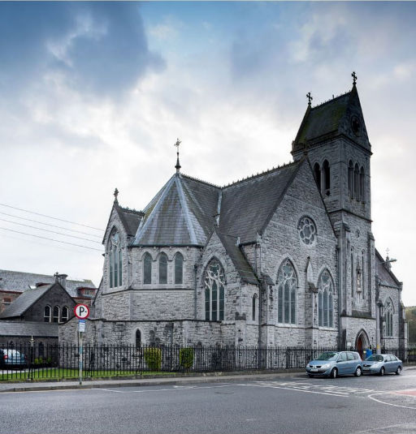

St Magdalens (Dominican) Church
The Dominicans were the first of the religious orders to come to Drogheda in 1224. They chose the highest point on the north side of Drogheda to build their first priory. All that remains there is the Magdalen Tower. The present church, overlooking the Boyne, was built in 1878. It contains depictions of the life of St Mary Magdalen and a shrine to St Martin de Porres. In 1971 during renovation work it was found that the belfry was moving so supports had to be built to prevent it "leaning" any further.